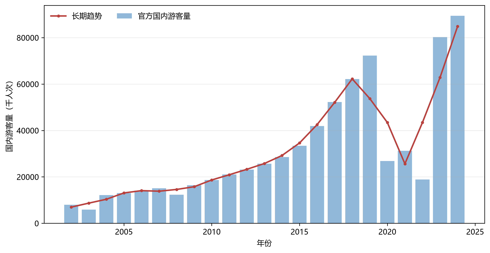
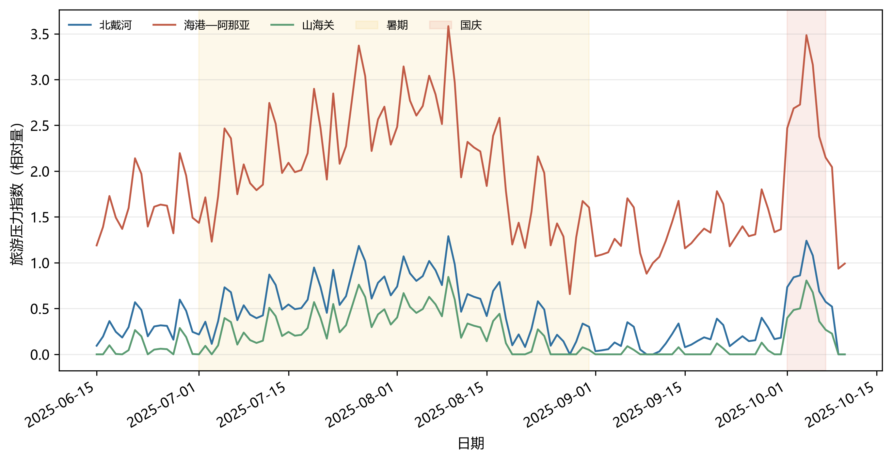

<h2>问题一：两张正文候选图</h2>
<p class="subtitle">请重点看：信息是否足够、字体是否清楚、是否有不该出现的“日游客量”口径。</p>
<div class="section"><h3>图 1　全市年度游客量趋势</h3></div>
<div class="section"><h3>图 2　三大片区旺季日级旅游压力</h3></div>
<div class="options"><div class="option" data-choice="accept" onclick="toggleSelect(this)"><div class="letter">✓</div><div class="content"><h3>接受两图</h3><p>继续生成三张正文表。</p></div></div><div class="option" data-choice="revise" onclick="toggleSelect(this)"><div class="letter">R</div><div class="content"><h3>需要修改</h3><p>请在对话中说明具体图号与修改点。</p></div></div></div>
